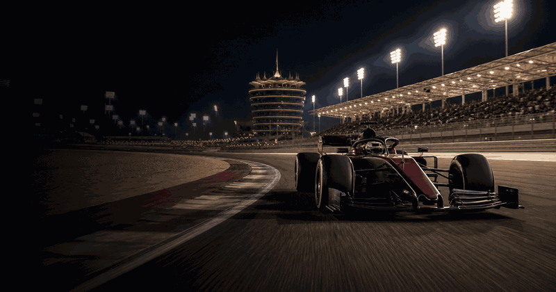
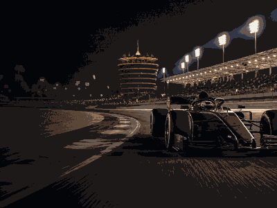

Qatar Grand Prix
First race2021
CircuitLusail
Race winners
1 NetherlandsMax VerstappenGrand Prix wins202320242025
NetherlandsMax VerstappenGrand Prix wins202320242025
3
2 United KingdomLewis HamiltonGrand Prix wins2021
United KingdomLewis HamiltonGrand Prix wins2021
1

More Formula 1Formula 1 topicMore races, circuits and calendar moments.
Qatar Grand Prix 2026 in Lusail
Qatar Grand Prix overview
Qatar Grand Prix uses cards, rankings, timelines, calendars and result blocks for current editions, location cues, schedules and related topic links.